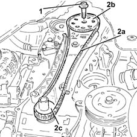
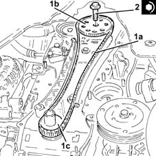

1032A12 CHAIN AND GEARS for timing system - R.R. for timing or Replacement.
- Path
- Procedures > 10 ENGINE > 1032 TIMING SYSTEM > 1032A chain timing system > 1032A12 CHAIN AND GEARS for timing system - R.R. for timing or Replacement.
- Kind
- repair procedure (removal / refitting; the operation number is the code)
- Applies to
- engines: 1.3 JTD; all production periods
- Interactive page
- https://sloeber94.github.io/elrnDB-lYpsln/en/#/2429014
Applies to: engines: 1.3 JTD; all production periods
 Removing
Removing
 Refitting
RefittingPosition the vehicle on the ramp.
Make sure that the ignition key is in the OFF position; then disconnect the battery negative (-) terminal.
 | Name | Connector |
|---|---|---|
- | Battery |
Drain the air conditioner coolant circuit 0010T84 coolant for air conditioning system dehydrate and recharge .
Proceed with removal 4450B04 right front wheel r r .
Proceed with removal 7055B66 Engine compartment DUST SHIELD protection in right front wheel arch - R.R. .
Proceed with removal 7055B91 Right front WHEEL ARCH LINER - R.R. .
Proceed with removal 1092G10 single engine belt r r .
Proceed with removal 1092A10 Crankshaft services PULLEY - R.R. .
Proceed with removal .
Proceed with removal 2110A60 manual gearbox/engine coupling bracket - r+r .
Proceed with removal 1020A20 crank case oil sump - r + r clean seals for sealant application .
Proceed with removal 1020B10 cover of timing system with chain drive - r + r replace oil seal and gasket .
1. Undo the bolt securing the driven timing pulley.
2. Remove the timing chain (2a) together with the driven timing pulley (2b) and the toothed drive pulley (2c).

Applies to: engines: 1.3 JTD; all production periods
Using suitable equipment, prepare the moving tensioner and keep it fully retracted using a suitable pin.
Applies to: engines: 1.3 JTD; all production periods
Refitting
Removing1. Refit the timing chain (1a) together with the driven timing pulley (1b) and the toothed drive pulley (1c).
2. Tighten the bolt securing the toothed driven pulley to the specified torque.
 | Fastening | Component | Ø | Value (daNm) |
|---|---|---|---|---|
2 | Bolt | TIMING DUCT PULLEY | M12 | (Exhaust camshaft side) 10.8 ÷ 13.2 |

Applies to: engines: 1.3 JTD; all production periods
Remove the pin from the moving tensioner and check that the moving tensioner piston is in contact with the plate.
Proceed with refitting 1020B10 cover of timing system with chain drive - r + r replace oil seal and gasket .
Proceed with refitting 1020A20 crank case oil sump - r + r clean seals for sealant application .
Proceed with refitting 2110A60 manual gearbox/engine coupling bracket - r+r .
Proceed with refitting 1092A10 Crankshaft services PULLEY - R.R. .
Proceed with refitting 1092G10 single engine belt r r .
Proceed with refitting 7055B91 Right front WHEEL ARCH LINER - R.R. .
Proceed with refitting 7055B66 Engine compartment DUST SHIELD protection in right front wheel arch - R.R. .
Proceed with refitting 4450B04 right front wheel r r .
Connect the negative (-) battery terminal.
Refill the engine oil lubrication system 0010T11 engine oil check level and top up .
Refill the engine cooling system with coolant 0010T20 coolant change .
Fill the air conditioner coolant circuit 0010T84 coolant for air conditioning system dehydrate and recharge .
Proceed with refitting .
Remove the car from the ramps.
Topics linked from this page (12)
- 0010T11 engine oil check level and top up
- 0010T20 coolant change
- 0010T84 coolant for air conditioning system dehydrate and recharge
- 1020A20 crank case oil sump - r + r clean seals for sealant application
- 1020B10 cover of timing system with chain drive - r + r replace oil seal and gasket
- 1092A10 Crankshaft services PULLEY - R.R.
- 1092G10 single engine belt r r
- 2110A60 manual gearbox/engine coupling bracket - r+r
- 4450B04 right front wheel r r
- 7055B66 Engine compartment DUST SHIELD protection in right front wheel arch - R.R.
- 7055B91 Right front WHEEL ARCH LINER - R.R.
- A1B Battery ( BATTERY NEGATIVE )